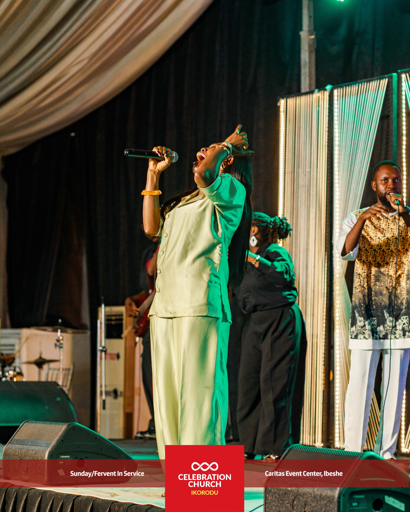

Providing spiritual leadership and oversight — guiding the vision and ensuring every effort aligns with the purpose of the Christmas Carol.
Managing audio excellence and visual impact — mixing, mic placement, and lighting design so every word, note, and glow lands perfectly.
Choreographing the flow of the event — order of service, transitions, and the seamless sequence that carries the congregation through the celebration.
Guarding order and etiquette — ushering, seating, decorum, and the formal rules that keep the occasion dignified and well organised.
Keeping everyone connected and the world watching — internal coordination, announcements, content creation, and live coverage across all platforms.
Crafting the atmosphere — decor, stage design, and every visual element that makes the venue feel warm, festive, and intentional.
Capturing the moments — stills, film, and narrative that preserve the Christmas Carol and tell its story long after the night ends.